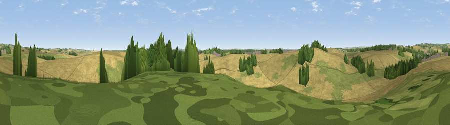

Viewpoint near Milborne St Andrew
#38814 in England · top 83% of its area beats it · near Milborne St AndrewThe view, rendered

A 360° render of this exact spot computed from the terrain model, tree cover and land cover — summer colours, afternoon light, calibrated against photographs of famous viewpoints. Real trees, hedges and buildings will differ in detail.
The panorama
Grey silhouette: terrain skyline in each direction (720 bearings, Earth curvature and refraction included). Dashed green: skyline with trees (+15 m) and buildings (+8 m) as obstacles. Blue strip: how far the ground is visible on each bearing.
Where the view opens
Wedge length = distance to the farthest visible ground on that bearing (vegetation-aware). Rings at 10, 25 and 50 km.
What fills the view
66% cropland · 25% grassland · 8% woodland ·
Angular shares of the visible panorama (visual magnitude), not map area. Landscape diversity 0.37 (0–1 Shannon).
Key numbers
More beautiful places nearby
The staircase of upgrades: each row has a higher view potential than everything closer. Driving times are estimates from straight-line distance, calibrated against real road routing — check an actual route before setting out.
| Place | Direction | Drive | Score |
|---|---|---|---|
| Viewpoint near Milborne St Andrew | E · 1 km | ~2 min | 40.5 |
| Viewpoint near Tolpuddle | WSW · 3 km | ~7 min | 46.9 |
| Black Hill | SE · 4 km | ~9 min | 49.2 |
| Viewpoint near Bere Regis | SE · 4 km | ~10 min | 50.7 |
| Viewpoint near Tincleton | SSW · 5 km | ~10 min | 52.4 |
| Viewpoint near Bere Regis | ESE · 5 km | ~11 min | 56.1 |
| Viewpoint near Milton Abbas | N · 7 km | ~15 min | 64.2 |
| Viewpoint near Melcombe Bingham | NW · 9 km | ~17 min | 66.8 |
50.76574, -2.27538 · source: screening · position refined by local search. Computed location — check access rights before visiting.